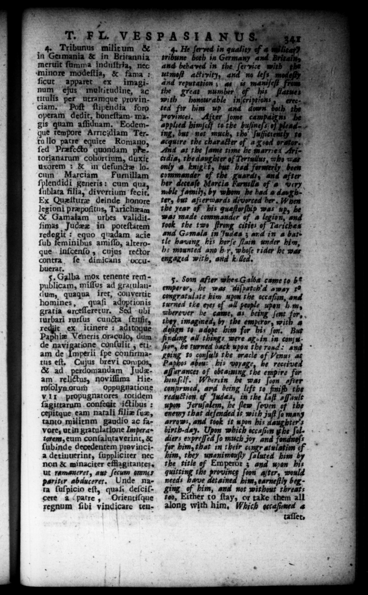

a 1 . T. FL,VESPASIANUS ar 4 Tribunus milit um & in Germania & in Britannia meruit famma induſtria, nec minore modeſtia, & fama : ſicut apparer ex imaginum eus moltitudine, ac titulis per utramque prov inciam. Poſt ſtipendia foro operam dedit, honeſtam- ma. gis quam aſſiduam. Eodemque tempore Arricidiam Ter. 1 — 6 tu lilo patre equire Romano, ſed Præfecto quondam ph. torianarum cohort ium, duxic uxorem : & in defunde locum Marciam Fumillam ſplendidi generis: cum qua ſublata filia, di vortium fecit. Ex Queſturz deinde honore legioni præpoſitus, Tarichæam & Gamalam urbes validitſimas Judzz in poteſtatem redegit : equo quadam acie ſub feminibus amiſſo, alteroque inſcenſo, cujus rector contra fe + dimicans occubuerar. Galba mox tenente rem 5 miſſus ad gratulaudum, quaqua Iret, COuvertic homines, quaſi adopt ionis gratia arceſſeretur. Sed ubi rurbari rurſus cuncta ſenſic, icinere : aditogue recht ex Pa i= Veneris oraculo, dum de 2 conſulic , eti- 1 am de mperii ſpe confirmatus eſt, Cujus brevi compos, & ad. perdomandam Judzam relictus, noviſiima Hieroſolyn orum V.1x propugnatores totidem ſagittarum confeait ictibus: cepitque: eam natali filiæ ſuæ, tanto militnm gaudio ac favore, ut in gratulatione Impera· torem, eum conſalutaverint, & ſubinde decedentem prev incia detinuerint, ſuppliciter nec non & minaciter efflagitantes. ut ramaneret, aut ſecum ame pariter abducerer. Unde nata ſuſpicio eſt, qual, deſciſcere à patre, Orientiſque regnum ſibi vindicare tenoppugnatione a | 4 He ſerved in quality of « uh tribune both in Germany and Britai and IE in * 4% model aut mot activity, no teſs | and reputation ; as | is manifeſt from the great number with honourable in{criptions ted fir him up and down | Provinces, After ſome campairns applied himſcif to the buſineſs 1 ing, but not much, the ſufjictently to acquire the character And at the ſame time be marrie1 Aticrdis, the daughter of Terruilus, who was only a knight, but had formerly been commander of the guards, and after her deceaſe Marcia Farmills of '# way noble family; by whom be had a daugh-" ter, but afterwards druyorced her. When the year of bis queſtarſhip was up, be was made commander of a legion, and took the tw F cities of Tariches and Gomala in Judes ; ard in a bat+ tle having his horſe ſlain under him, he mounted ano h r, whoſe rider he was engaged with, and k led. 5. Son ter whes Galla came to b* emperor, he was "diſpatch'd away t congratulate him upon the occaſion, and turned the eyes of all people upon hm, wherever be came, as. being ſent 4 to 4 bim for bis ſon. finding all things were g. in in com uon, he turned back upon the road: and going #0 con ſuli the oracle of Venus Paphos abs: , his voyage recti ue afſurances of obtaiung the empire for Ham ſelf. ruin he was ſoon after . confirmed, ard being left te finiſh oe c redu#ion, of Judea, in the lat afſaul upon 11 2 Fo ni, the en that de ſenadea it Wit ma — and took it u bon his aa 7 70 7 birth-day. Upon which iccaſoen and z diers 1 fo much joy or him, t a im, they unanimouſly ſaluted him the title of Emperor 3 and wen his quitting the province ſoon aſter, would needs have detained him, earneſtly beg ging of him, and not without threats 700, Either to ſtay, or take them all along with him, Which ocrafined 4 of a good orator... v fr, . they imagined, by the emperor, with 4 But t mm their congr atulation of d. * ſervice with "the 75 his fan bot the 0 ” * ongne/*
